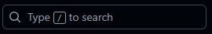
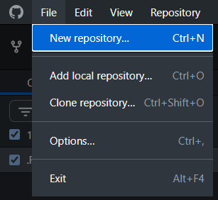
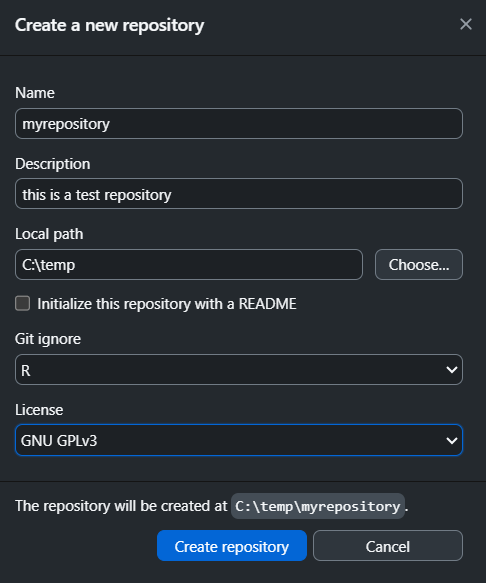
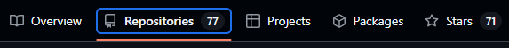
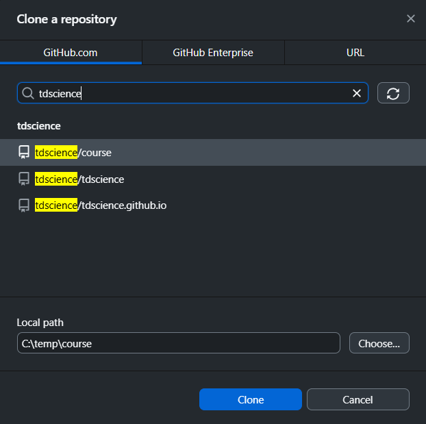
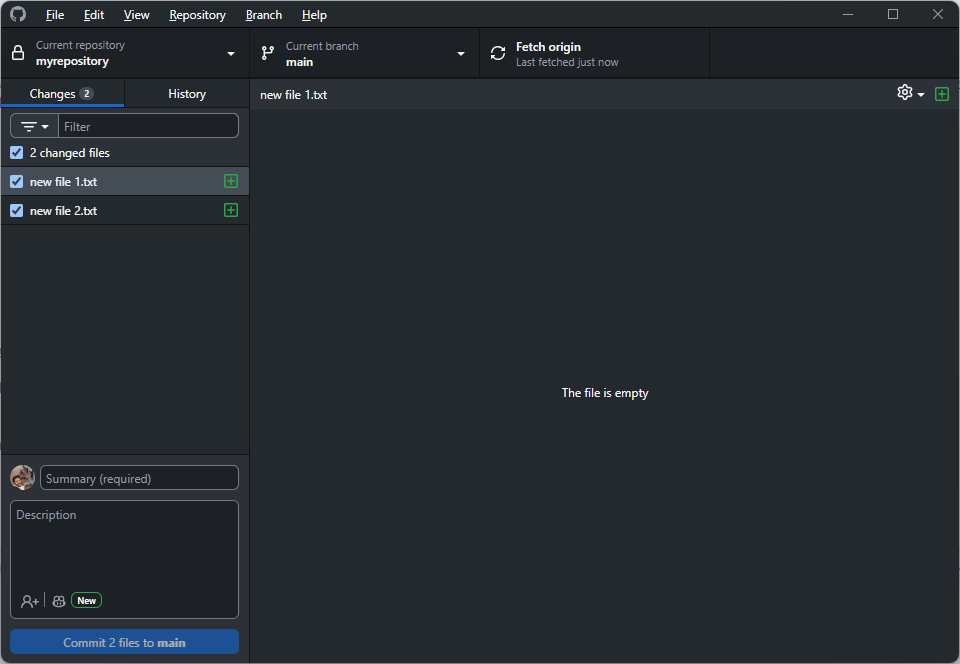
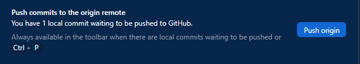

Sharing code and data
1 Navigating GitHub
1.1 Using the gh command line interface (CLI)
You can search repos, commits, issues, pull requests, and code with the gh CLI tool. For example, to search for repositories related to “transport” sorted by the number of stars, you can run:
gh search repos --topic transport --sort stars --limit 5That outputs the following:
Showing 5 of 1081 repositories
NAME DESCRIPTION VISIBILITY UPDATED
gboeing/osmnx Download, model, analyze, and visualize street networks and other geospatial features fro... public about 10 hours ago
eclipse-sumo/sumo Eclipse SUMO is an open source, highly portable, microscopic and continuous traffic simul... public about 19 minutes ago
Haivision/srt Secure, Reliable, Transport public about 6 hours ago
enisdenjo/graphql-ws Coherent, zero-dependency, lazy, simple, GraphQL over WebSocket Protocol compliant server... public about 6 hours ago
gboeing/osmnx-examples Gallery of OSMnx tutorials, usage examples, and feature demonstrations. public about 16 hours agoYou can search for repos related to transport data science with the following and similar commands, as shown in Figure 1.
gh search repos "transport data science" --sort stars --limit 5{kind=link}
See the gh CLI manual for more details.
1.2 Exploring GitHub’s web interface
After you’ve logged into github.com, you can use the web application to explore open source software. You can search for people’s profiles and repositories (the public ones) using the search bar. Try looking for a topic, package, or researcher/developer whose work interests you.

When you access any public repository, you will typically see the same information in a similar layout:

GitHub organizes a repository’s content and collaboration tools into several key tabs. These tabs act as a dashboard, each providing a different view of the project’s status and activity.
1.3 The Main Tabs
- Code: This is the repository’s home page. It displays the project’s file and folder structure as it currently exists on the main branch. You can browse and view all the code, read the README file, and see the latest commits, providing a snapshot of the project’s current state.
- Issues: This tab is a central hub for tracking tasks, bugs, and feature requests. It’s a key collaboration tool where developers can open new issues to report problems, ask questions, or propose new ideas. The discussion around an issue is contained in a single thread, keeping conversations organized and searchable.
- Pull requests: When a contributor wants to merge their changes from one branch into another, they create a pull request. This tab lists all open, closed, and merged pull requests. Pull requests are where code review happens; collaborators can discuss the proposed changes, add comments, and approve the code before it is integrated into the main project.
- Discussions: This tab is a more free-form space for conversations that are not tied to a specific bug or feature. It is a place for general questions, project announcements, or sharing ideas with the community. Think of it as a forum built right into the repository, allowing for broader, non-code-related conversations.
2 Creating and managing repositories
You can create a repository from scratch or using an existing folder. The following instructions show the basic process for creating a new repository, which will create a Git repository on your machine and upload it to GitHub.
You can use the gh command line interface (CLI) or a graphical user interface (GUI) like GitHub Desktop to create and manage repositories.
While both approaches work, we recommend using the gh CLI because, after you have learned the commands, it is faster, more flexible, and easier to automate repetitive tasks.
If you want to create a repository using an existing folder, make sure to navigate to that folder in your terminal before running the gh repo create command.
To create a repository from scratch, go to the location where you want to create your project using the shell, then run gh repo create to access the interactive mode.
We will select the first option:
? What would you like to do? [Use arrows to move, type to filter]
> Create a new repository on github.com from scratch
Create a new repository on github.com from a template repository
Push an existing local repository to github.comAssign a name. Remember that this will create a new folder with that name. We will call it myrepository.
? Repository nameNow select the owner of the repository, in this case, your username on GitHub.
? Repository owner [Use arrows to move, type to filter]
> yourGHnameYou can provide a description for the repository. This can be edited afterwards.
? Repository owner yourGHname
? DescriptionYou can choose whether your repository will be private or public. This can also be changed afterwards.
? Visibility [Use arrows to move, type to filter]
> Public
PrivateThe next steps will ask if you want to add README, .gitignore, and license files to your repository. A README file typically explains what the project is, why it is useful, and how others can get started using or contributing to it. A .gitignore file is a plain text file that tells Git which files or directories to intentionally ignore and not track. This is crucial for keeping a repository clean and secure. There are readily available templates based on programming languages; you can pick R in this case. Finally, the license file, if created, clearly states the legal terms under which the project’s code is distributed.
After all questions, the interactive assistant will confirm if you want to create the repository.
? Would you like to add a README file? Yes
? Would you like to add a .gitignore? Yes
? Choose a .gitignore template R
? Would you like to add a license? Yes
? Choose a license GNU Affero General Public License v3.0
? This will create "myrepository" as a public repository on github.com. Continue? (Y/n)Confirm your repository and explore its contents!
Open the GitHub Desktop app. Click on the File menu and select New repository...

A window asking for the details of your repository will appear.

A .gitignore file is a plain text file that tells Git which files or directories to intentionally ignore and not track. This is crucial for keeping a repository clean and secure. There are readily available templates based on programming languages; you can pick R in this case. Finally, the license file, if created, clearly states the legal terms under which the project’s code is distributed.
This process will create the repository locally. In order to publish it on GitHub, you have to click on Publish repository.

Once your repository is created, you should be able to see it online. To access it, click on the Repositories tab in your profile page and select the repository you just created. You can see a list of repositories in your profile page by clicking on the Repositories tab, or typing github.com/username?tab=repositories in your browser, replacing username with your GitHub username. To see robinlovelace’s repositories, for example, you can type the following into your browser: github.com/Robinlovelace?tab=repositories.

If you want to create a repository from an existing project, you will need to initialize your repository. For this, go to the folder where you have your project with cd <folder path>, and run git init. This will create a local repository.
2.1 Exercise
Can you create a repository from an existing folder using either gh CLI or GitHub Desktop?
3 Cloning repositories
To work on a project from GitHub, you first need to clone the repository to your local machine. Cloning creates a local copy of all the files and history.
Using the command line, go to the location where you want to store the repository and run:
gh repo clone username/repositorynameReplace
username/repositorynamewith the actual repository path on GitHub. For example,tdscience/course.With GitHub Desktop, click
File>Clone repository, search for the repository, and choose a local path.

4 Making changes and committing
A key part of version control is recording the changes in the repository. Once you have created or deleted files, or made any changes, you need to commit them to save a snapshot of your work. In the diagram below, each dot is a commit with a set of changes.

To commit changes, you will need to stage them first. In the command line, you can stage a file with the following code:
git add <filename>Alternatively, if you want to stage all files you can use
git add .Then, to finally commit changes, use the following code:
git commit -m "Describe your changes"It is good practice to use concise but clear messages to describe what the change was.
In GitHub Desktop, changes are shown automatically. You may select the files that you want to include in the commit. Add a summary and click “Commit to main”.

5 Pushing changes to GitHub
To update the repository on GitHub with your local commits, push your changes:
Command line:
git pushIn GitHub Desktop, click “Push origin”.

6 Collaboration with GitHub
GitHub enables collaboration by allowing multiple people to work on the same repository. You can use Issues and Discussions to communicate. Imagine that you are working on some analysis in a team. One person in the team identifies a problem with the analysis. That person can open an issue to inform the rest of the team about this problem.
Using the command line, you can create an issue by running:
gh issue createAlternatively, you can use the Issues tab online and create it there.
7 Branches and pull requests
Branches let you work on new features or fixes without affecting the main codebase. When you create a branch, you effectively create a snapshot of the project at that point and use it as a starting point. It is recommended that you create a branch based on an existing issue, so there is some traceability of why there is a new variation of the project.
To create a branch from an issue, e.g. #3, you can run:
gh issue develop 3 --checkoutUsing --checkout will move you from the main version of the project to the version where you are going to do the work to implement the solution to the issue. You can now start working and committing all necessary changes without affecting the main project. If you need to return to the main branch, you can run git checkout main.
Once you have finished working with your branch, you can create a pull request so the changes are incorporated into the main version. To do this, run the following code:
gh pr createIn GitHub Desktop, every time you commit a change on a different branch to main, it will ask you if you want to create a pull request.
After creating the pull request, you can ask someone in the team to review your work. This will ensure that the changes are correct.
8 Merging changes
Once a pull request is reviewed and approved, you can merge it into the main branch.
On GitHub, click “Merge pull request”.
Locally, use:
gh pr merge 1
9 Resolving conflicts
Conflicts occur when changes in different branches overlap. Git will mark the conflicting files.
Open the file, look for conflict markers (
<<<<<<<,=======,>>>>>>>), and edit to resolve.After resolving, add and commit the file:
git add <filename> git commit
10 Automated workflows with GitHub Actions
GitHub Actions lets you automate tasks like testing or deployment.
- Add workflow files in
.github/workflows/. - Example: Run tests on every push.
11 Best practices for collaboration, sharing code and data
- Write clear commit messages.
- Use branches for features and fixes.
- Keep your repository organized with README, .gitignore, and license files.
- Communicate using Issues and Discussions.
- Review code via pull requests.
- Protect sensitive data by not uploading secrets.
12 Exercises
12.1 Contribute to the course repo
- In PowerShell or a unix terminal, clone the course repo if you have not already with the
ghCLI tool in the github folder on your computer that you will create if it does not already exist (or another location of your choosing). See Session 1 exercise for instructions.
Assuming you have saved the repo locally to ~/github/tdscience/course, open it in an IDE of your choice from the command line.
code ~/github/tdscience/course# Note: you need to include the .Rproj file
rstudio ~/github/tdscience/course/course.Rprojpositron ~/github/tdscience/coursecd ~/github/tdscience/course
# Then open your preferred editor/IDE
code .12.1.1 Open an issue
From the IDE with the course repo open, open a terminal (e.g. with Ctrl+’ on Windows or F1 and then type “focus terminal”) and run the following command to create a new issue:
gh issue createYou can toggle the terminal view with Ctrl+J in VS Code. In RStudio, VS Code, and Positron, Ctrl+1 focusses on the source editor pane.
12.1.2 Create a branch
You can also use the gh CLI to efficiently create a branch from the issue you just created. Assuming the issue number is 1, run:
gh issue develop 1 --checkout12.1.3 Make changes
- Add your name, GitHub username, favourite animal and where you’re from to the people.csv file in the course repo at github.com/tdscience/course/data/people.csv
To reduce conflicts, edit a specific line number. This number should be assigned to you by the instructor, but if not, pick a random line number to edit between 3 and 100.
12.2 Adding content to your course repo
Building on the exercise to create a repository called eitcourse in Session 1, start adding contents to your repository.
12.3 Bonus: Create a repo from a template
If you’re feeling ambitious, you can try creating a repo with GitHub actions and other things for building a website. You could do this as follows, for example, starting with the repo at github.com/Robinlovelace/reproducible-project-template.
# rename eitcourse to eitcourse-old:
gh repo rename eitcourse-old --repo robinlovelace/eitcourse
# Or delete as follows or from website:
gh repo delete eitcourse-old --yes
# Create new repo from template:
gh repo create eitcourse --template robinlovelace/reproducible-project-template --public